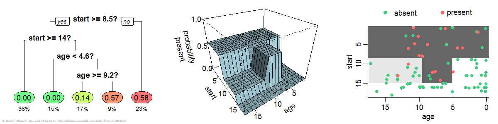

PRV 202 A/B/C: Frontiers of Technology Data Science
Frontiers of Technology: Data Science, PRV 202 Sections A/B/C
Click for Tentative Class Schedule & HW Assignments
General Information
Possible Updates to this Document
The information in this syllabus information may be subject to change. The most up-to-date document can be found through the navigation bar on Canvas.
| Instructor: | Dr. Jacek Ossowski |
| Email: | jossowsk@stevens.edu |
| Lectures Section A: | Fri 1:00pm - 1:50pm ⟡ Kidde 228 |
| Lectures Section B: | Fri 2:00pm - 2:50pm ⟡ Kidde 228 |
| Lectures Section C: | Fri 3:00pm - 3:50pm ⟡ Kidde 228 |
| Class Format: | in-person |
| Office Hours: | Tuesdays ⟡ 5pm - 7pm ⟡ GS 246 |
TA Office Hours: | TA Office Hours → |
Other Q&A resource: peer discussion forum will be set up on discord.com. See the "Software" section for instructions on joining our class on Discord.
Suggested Textbooks
Because of the format of our course and its introductory nature, there is no required textbook. We will be covering topics that are adapted versions of content from two more advanced sources.
Learning From Data by Yaser S. Abu-Mostafa, Malik Magdon-Ismail, and Hsuan-Tien Lin
Python Data Science Essentials by Alberto Boschetti and Luca Massaron
Description of Course
In this course we will study methods to extract patterns and make explanatory or predictive conclusions based on various amounts of data. We will start with a conceptual and methodological framework needed to understand and apply Data Science. This framework includes data preparation and cleaning, model choice and fitting, training and test sets, prevention of overfitting, as well as avoidance of biases in the data. We will survey several data models that are widely used in practice such us linear regression, decision trees, k-means clustering, and others. In the final part of the course, we will familiarize ourselves with Machine Learning models for image recognition and text generation. Because of practical and technical nature of the subject, the concepts and the methods will be illustrated with hands-on examples in rudimentary Python. We will emphasize intuitive understanding of concepts and avoid introducing unnecessary technical details. We will also discus the pitfalls and impact the use of these methods has had on the society.
After this course you will be able
- to identify and discuss the resources and components needed to
create/deploy/use the technology
- to describe and communicate about the technology, either orally or in
writing.
- to investigate, identify, and analyze various applications of the
technology
- to identify and articulate positive and/or negative ethical, social, cultural,
environmental, and/or safety implications of the technology
Online Assignments
Online assignments will be posted weekly on Canvas in the form of quizzes. There will be 14 such assignments and they will account for 75% of your grade. The worst three will be dropped at the end of the semester to account for personal circumstances such us religious holidays not observed by Stevens, important family events, or accidents that do not fall into the excusable event category. Please note that this allowance can be easily depleted, and you should take advantage of it very judiciously. Because of limited resources, without exception, no late submissions will be accepted unless documentation is provided for an excusable event. Work submitted on time but in a wrong place will not be graded.
Attendance
Since our class involves customized material that is intended for a particular audience, it is doubly important to attend the lectures. For that reason, attendance accounts for 25% of your grade and will be taken during every class session a few minutes after its start. To sign in your presence you will need to enter a class specific code into your phones. If you miss the 2 minute window when the code is available, you will be considered as arriving too late to benefit from attendance and marked as not present. This is because our lectures, by their nature, have a logical structure where concepts covered later in the session depend on those introduced before. After a certain point, having lost the initial context, it is not possible to follow the material. Similar to the quiz assignments, we will have a three absence allowance that should be used judiciosly for important personal circustances such as religious holidays not observed by Stevens, important family events, etc.
Attending lectures in person is an important part of the learning process. Reading the textbook on your own or trying to learn the material primarily from other sources is in practice considerably more difficult than disciplined attendance of the lectures and completion of the course’s homework. In addition, seeing and interacting with your fellow students in person could be very valuable on its own as participating in a group effort is generally stimulating and it may lead to some beneficial serendipitous encounters or ideas. Attendance via Zoom (if available) does not have these benefits and will not count towards your attendance score.
Grading
| Participation: |
25% |
| Online Assignments: |
75% |
When assessing how you're doing in the class, simply calculate the weighted average of your average attendance score and your average quiz score using the weights from the above table. Note that Canvas automatically calculates a number of misleading running averages which are not informed by our course's policy (e.g., Canvas does not know how much weight is assigned to attendance or our quizzes) At the same time, it is not possible to turn those automatic calculations off so please disregard them.
Grading Scale
| Numeric Grade |
Letter Grade |
| 93+ |
A |
| 90-92 |
A- |
| 87-89 |
B+ |
| 83-86 |
B |
| 80-82 |
B- |
| 77-79 |
C+ |
| 73-76 |
C |
| 70-72 |
C- |
| 67-69 |
D+ |
| 63-66 |
D |
| 60-62 |
D- |
| 0-59 |
F |
Discord Discussion Forum
If you have a question regarding the material or quizzes, chances are that somebody might have encountered that problem already. Check our Discord discussion forum first and post your question there if it has not been answered yet (see the "Software" section for the setup).
If you don't get the answer this way in a reasonable amount of time, (only then) you can ask me that question outside of my office hours. Naturally, you can ask me any question regarding the course during my office hours. Note: when choosing your Discord nickname please give your full name.
Hardware and Technical Requirements
The hardware/technical requirements for this course include:
-
Computer satisfying the following minimum technical requrements
- In general, the device must be portable, sufficiently up to date, and have adequate memory and storage so that it can run the current version of its operating system
- Intel Core i5 or AMD Ryzen 5 processor (i7 or Ryzen 7 preferred)
- 8GB of RAM (16 GB preferred)
- Mac OS 10.15 or Windows 10
- 256 GB SSD hard drive (512 GB preferred)
- Wireless networking adapter
- Camera and microphone
-
Dedicated access to high-speed internet with a minimum speed of 1.5 Mbps (4 Mbps or higher is recommended).
-
Webcam (for remote classes if necessary)
-
Microphone (for remote classes if necessary)
Software
- Canvas (free) - Hosts all class materials and meetings.
- Google Collab (free) - an online computational notebook platform offering instllation-free Python that we will use for our examples. There is no need for any installation, simply click on the link and you will get your own instance of the platform.
- Discord (free) - Communication platform for discussions. Use the link in the course navigation bar on Canvas to join this class on Discord. When choosing your Discord nickname please give your full name.
Install (cut-and-paste https://discord.com/download into the browser if the link does not work)
- Privacy Statement (cut-and-paste https://discord.com/privacy into the browser if the link does not work)
For information on managing your privacy at Stevens Institute of Technology, visit the University’s Privacy page.
NOTE: This course has NOT been designed for use with mobile devices.
Communication
- The homework assignments, solutions, and announcements will be posted on Canvas.
- Please ensure that you can receive emails from Canvas so that you can get course announcements. However, if you need to contact me, please email me under the @stevens address. I do not check my Canvas mailbox.
- Discussions will take place on Discord. I will also answer questions on Discord, but I encourage students to try to answer questions jointly as well.
- Do not ask for or provide actual solutions to quiz problems on Discord.
- Personal questions should be sent directly to my email or handled in person during office hours.
- I will not answer emails from Friday 6pm to Monday 9am.
Collaboration
-
All homework assignments should be completed individually.
-
You should strive to answer quiz questions based on the content of our lectures as they are the best source for correct answers. You should not use language models such as ChatGPT or search for the answers on the Internet. Our course is customized to such a degree that you may get misleading suggestions by outside sources that are not informed by our flow of covered concepts.
-
Posting questions assigned in this course on the Internet (say, Reddit, Chegg, Studocu, etc.) is prohibited.
Accommodation For Personal Circumstances including Religious Holidays
The course offers generous allowance for personal circumstances such as family events, religious holidays not observed by SIT, or other situations. You are allowed to miss three lectures without any impact on your participation score. Three worst quizzes will be dropped at the end of the semester and hence will not be reflected in your final grade. Please plan accordingly in order not to deplete prematurely these allowances so that you can confine your special needs within the provided limits. No additional relief will be offered for the above reasons. Further accommodation will only be provided in cases of credibly documented illness, hospitalization, an accident, or similarly serious and unexpected situations.
Academic Integrity
Undergraduate Honor System
Enrollment into the undergraduate class of Stevens Institute of Technology signifies a student's commitment to the Honor System. Accordingly, the provisions of the Stevens Honor System apply to all undergraduate students in coursework and Honor Board proceedings. It is the responsibility of each student to become acquainted with and to uphold the ideals set forth in the Honor System Constitution. More information about the Honor System including the constitution, bylaws, investigative procedures, and the penalty matrix can be found online.
The following pledge shall be written in full and signed by every student on all submitted work (including, but not limited to, homework, projects, lab reports, code, exams) that is assigned by the course instructor. No work shall be graded unless the pledge is written in full and signed.
“I pledge my honor that I have abided by the Stevens Honor System.”
Reporting Honor System Violations
Students who believe a violation of the Honor System has been committed should report it within ten business days of the suspected violation. Students have the option to remain anonymous and can report violations online
The collaboration policy described above is designed to allow students the resources to succeed while ensuring they learn and master the material. If you are unsure whether something is acceptable according to the collaboration policy, talk to me!
Violations of this policy will be considered violations of the academic integrity policy and will be reported to the appropriate school offices.
Consequences may include (but are not limited to) failure of the class. Academic misconduct includes, but is not limited to:
- copying or plagiarizing solutions in whole or in part from fellow students or other sources
- screen sharing text/code on any platform (Discord, VS Code LiveShare, …) counts as sharing the solution.
- unintentionally sharing solutions through platforms mentioned above, or sharing more of the solution than you intended.
- it is your responsibility to be mindful of who can access your files and which files they can access;
note that it may be easy for strangers to access voice channels on a Discord server and that many code/text sharing platforms (e.g. VS Code LiveShare)
give participants access to all files and directories within the directory you share.
- posting questions on forums like Reddit, StackOverflow, Studocu, Chegg or others. You can refer to previously posted questions on these forums, but not create new ones for this course.
Learning Accomodations
Stevens Institute of Technology is dedicated to providing appropriate accommodations to students with documented disabilities. The Office of Disability Services (ODS) works with undergraduate and graduate students with learning disabilities, attention deficit-hyperactivity disorders, physical disabilities, sensory impairments, psychiatric disorders, and other such disabilities in order to help students achieve their academic and personal potential. They facilitate equal access to the educational programs and opportunities offered at Stevens and coordinate reasonable accommodations for eligible students. These services are designed to encourage independence and self-advocacy with support from the ODS staff. The ODS staff will facilitate the provision of accommodations on a case-by-case basis.
Student Disability Files are kept separate from academic files and are stored in a secure location within the Office of Disability Services. The Family Educational Rights Privacy Act (FERPA, 20 U.S.C. 1232g; 34CFR, Part 99) regulates disclosure of disability documentation and records maintained by Stevens Disability Services. According to this act, prior written consent by the student is required before our Disability Services office may release disability documentation or records to anyone. An exception is made in unusual circumstances, such as the case of health and safety emergencies.
For more information about Disability Services and the process to receive accommodations, visit https://www.stevens.edu/office-disability-services. If you have any questions please contact: Phillip Gehman, the Director of Disability Services Coordinator at Stevens Institute of Technology at pgehman@stevens.edu or by phone (201) 216-3748.
Mental Health Resources
Part of being successful in the classroom involves a focus on your whole self, including your mental health. While you are at Stevens, there are many resources to promote and support mental health. The Office of Counseling and Psychological Services (CAPS) offers free and confidential services to all enrolled students who are struggling to cope with personal issues (e.g., difficulty adjusting to college or trouble managing stress) or psychological difficulties (e.g., anxiety and depression). Appointments are strongly encouraged and can be made by phone (201-216- 5177) or in-person (on the 7th floor of the Howe Center). CAPS is open from 9:00 am – 5:00 pm Mondays, Wednesdays, Thursdays and Fridays and from 9:00 am – 7:00 pm on Tuesdays during the Fall and Spring semesters.
Emergency Information
In the event of an urgent or emergent concern about the safety of yourself or someone else in the Stevens community, please immediately call the Stevens Campus Police at 201-216-5105 or their emergency line at 201-216-3911. These phone lines are staffed 24/7, year round. Other 24/7 resources for students dealing with mental health crises include the National Suicide Prevention Lifeline (1-800-273-8255) and the Crisis Text Line (text “Home” to 741-741). If you are concerned about the wellbeing of another Stevens student, and the matter is not urgent or time sensitive, please email the CARE Team at care@stevens.edu. A member of the CARE Team will respond to your concern as soon as possible.
Copyright
My lectures, notes, handouts, and displays are protected by state common law and federal copyright law. They are my own original expression. Students may take notes. In addition, students will be consulted before using their solutions either with or without their name.
Last modified: May 13, 2025